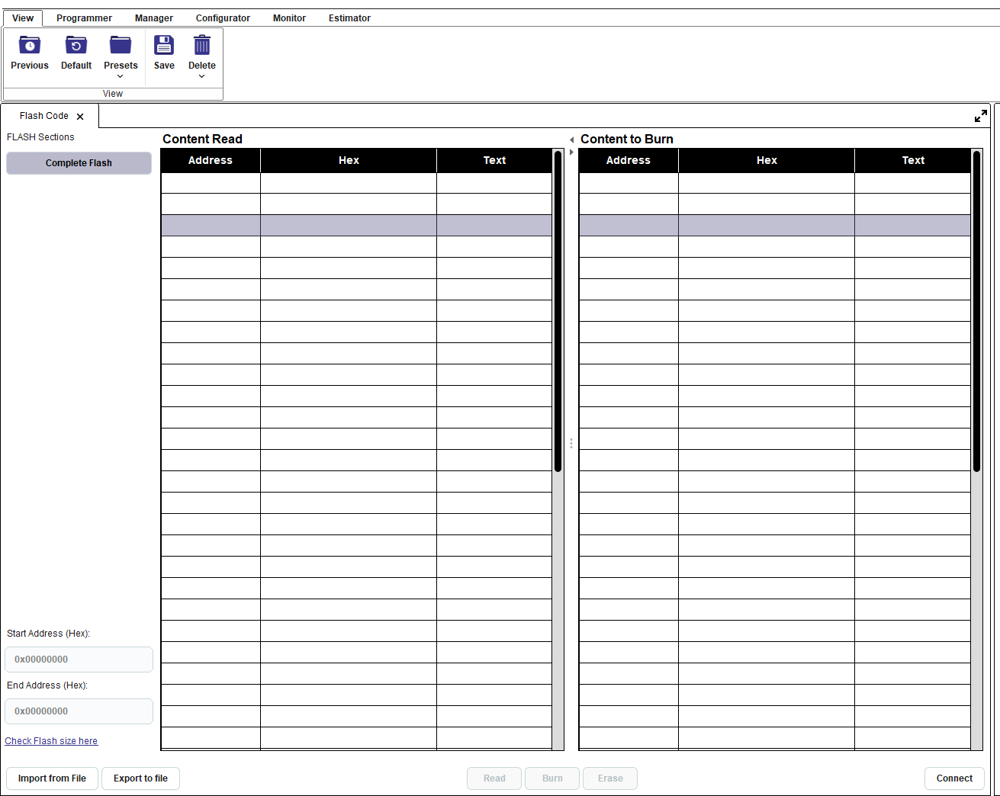
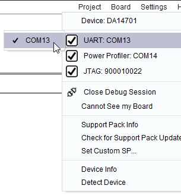
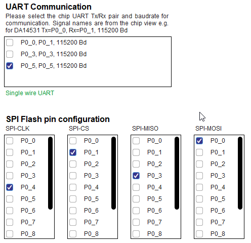
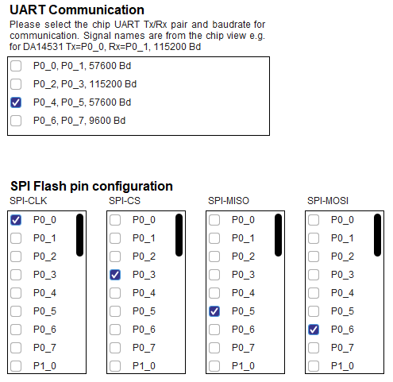
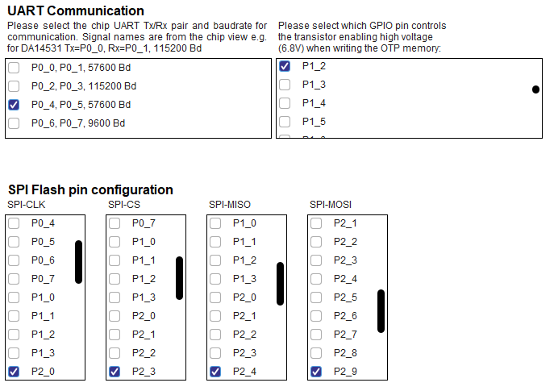
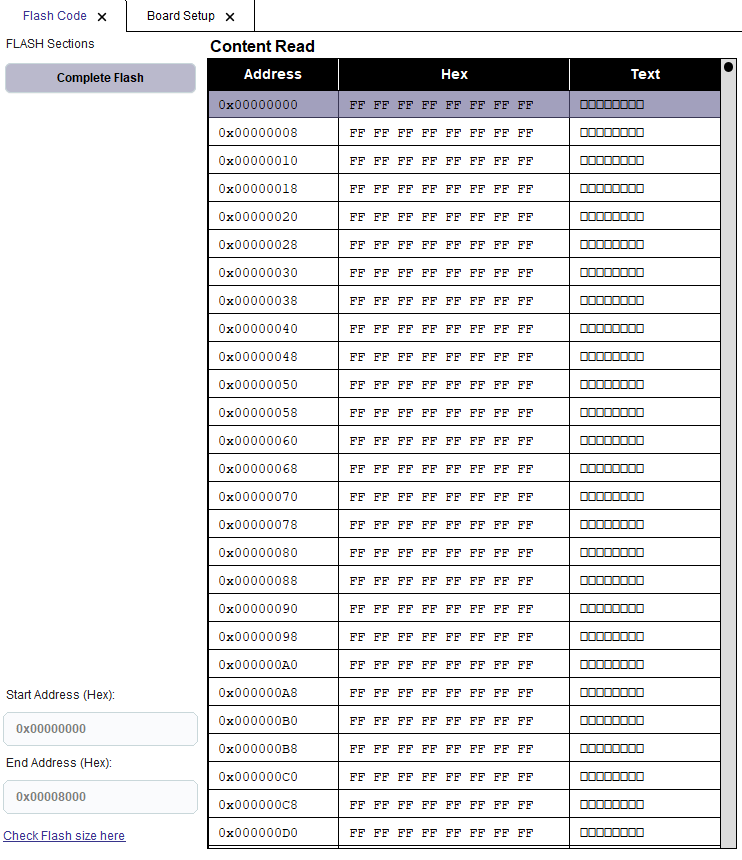
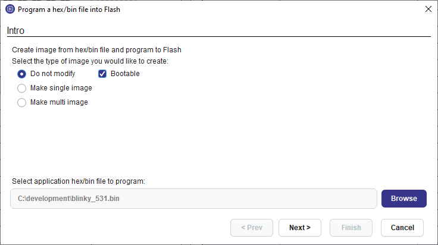
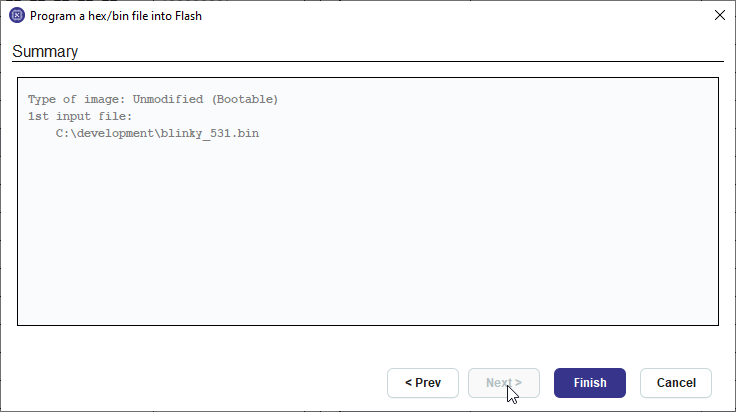
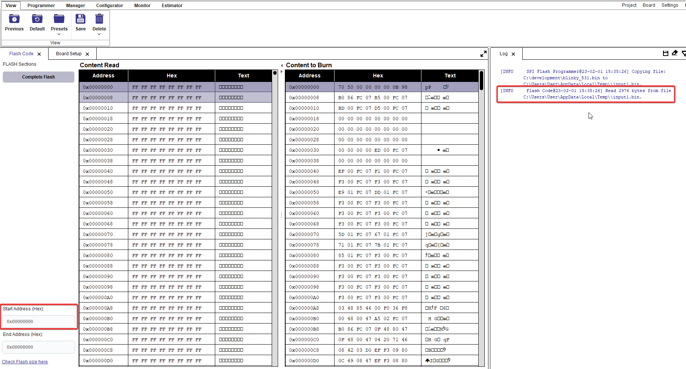
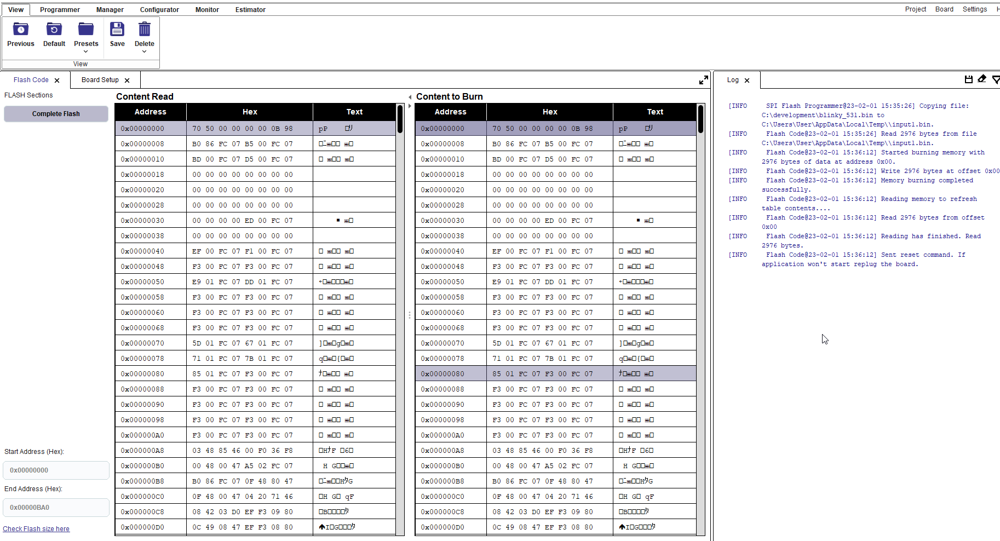

11.2.2. Burn binary to flash for DA1458x, DA1453x and DA14585-586¶
From Programmer menu select the Flash Code tool
Figure 183 Flash Code initial screen
From Board menu select a UART or JTAG interface. If UART interface is selected also select the correct pins from Board Setup tool. User should also verify that the correct flash pins have been selected.
Figure 184 Interface selection
Figure 185 Default pin selection from Board Setup tool for DA14531
Figure 186 Default pin selection from Board Setup tool for DA14585
Figure 187 Default pin selection from Board Setup tool for DA14583-01
Press the Connect button on the bottom of the tool.
The connect process will download the appropriate firmware in chip RAM to support the burn process. If the UART interface is selected the RESET button on the board may need to be pressed. Please check the log window for any requesting the user’s interaction.
Press the Read button to read the contents of the flash. The contents are presented on the left table named “Content Read*. Verify that the flash is empty.
Figure 189 Empty Flash
Press the Import from File button and the import wizard appears
Figure 190 Import wizard step 1
Select the application file to burn in bin or .hex format. If option do not modify is selected, the file should contain an image. Image may become bootable by clicking the respective checkbox. Please refer to Flash Code for single and multi image options. Press Next
Figure 191 Import wizard step 2
Press Finish and the Content to Burn table is populated with the data to burn.
Figure 192 Content to burn table
Check that the start address to burn the application is 0x00 (Figure 192) and press the Burn button.
After successful burn the “Content Read” table is updated, the RESET command is sent to the chip and the application starts running.
Figure 193 Memory contents after flash burn
{kind=link}
{kind=link}
{kind=link}
{kind=link}
{kind=link}
{kind=link}
{kind=link}
{kind=link}
{kind=link}
{kind=link}
{kind=link}
For full documentation of the Flash Code tool refer to Flash Code